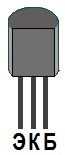

Транзистор C1815
Транзистор C1815 - универсальный маломощный n-p-n структуры. Используется в генераторах средней и высокой частоты, низкочастотных устройствах с небольшим уровнем шумов.
Комплементарной парой для C1815 является транзистор A1015 c p-n-p структурой.
Типы корпуса: TO-92; SOT-23.

Рис. 1 - Цоколевка транзистора C1815
| Напряжение коллектор-эмиттер, не более | 50 В |
| Напряжение коллектор-база, не более | 60 В |
| Напряжение эмиттер-база, не более | 5 В |
| Ток коллектора, не более | 0,15 А |
| Рассеиваемая мощность коллектора, не более | 0,4 Вт |
| Коэффициент усиления транзистора по току (h21э) | |
| C1815O | 70...140 |
| C1815Y | 120...240 |
| C1815GR | 200...400 |
| C1815BL | 350...700 |
| Граничная частота коэффициента передачи тока | 80 МГц |
| Корпус | TO-92, SOT-23 |
Аналоги
| Зарубежные | Отечественные | |
|
КТ3102Б, КТ3102А. |